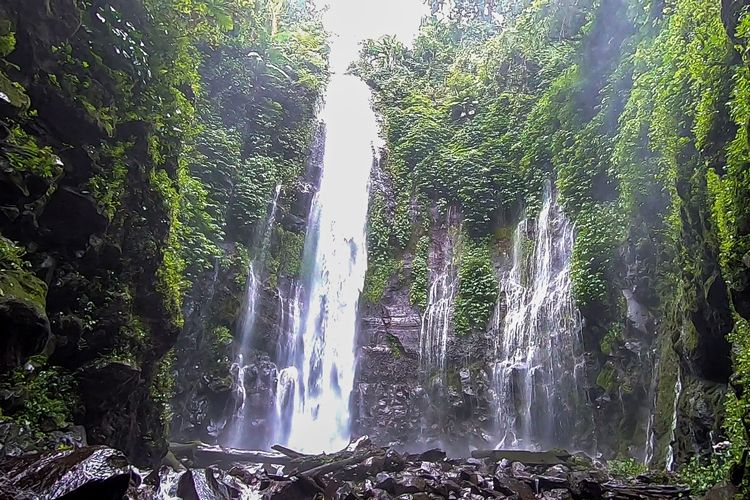
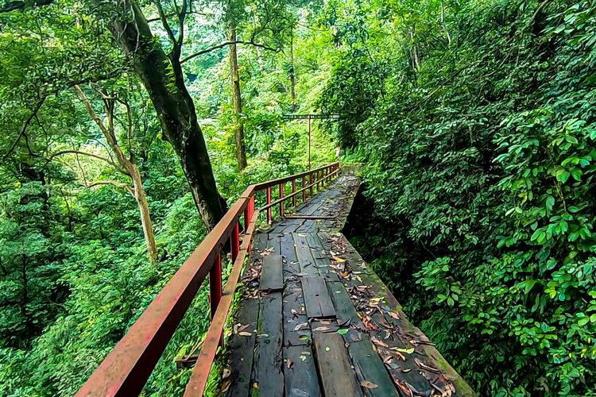
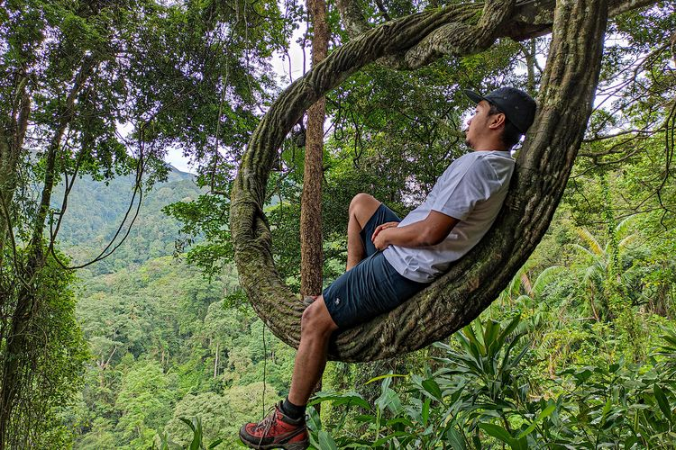

Sejarah
Saat berada di Kabupaten Semarang dan ingin menikmati suasana alam,
terdapat sebuah tempat wisata bernama Curug Lawe Benowo di Kecamatan
Ungaran Barat yang dapat dikunjungi. Jika ingin berkunjung, Ketua
Lembaga Masyarakat Desa Hutan (LMDH) Bela Pesona Curug Lawe Benowo
Kalisidi (CLBK) bernama Muhajirin mengatakan, di sana pengunjung
akan disambut oleh pesona dua air terjun yang berada dalam satu
lokasi. “Memang ada dua di kami (Curug Lawe dan Curug Benowo). Tidak
berjejeran, tapi berdampingan. Kalau Lawe tingginya 30 meteran,
Benowo 40 meteran,” Daya tarik tempat wisata tersebut adalah alamnya
yang masih asri lantaran berada di bawah pengelolaan Perhutani. Baik
itu area air terjun, jalanan dari area parkir menuju area air
terjun, dan dari area Curug Lawe ke Curug Benowo atau sebaliknya,
menurut Muhajirin lingkungannya masih sangat terpeliharan. “Kita
untuk hutan memang dilindungi dari beberapa hal. Misalnya tidak
boleh memetik tanaman atau pepohonan. Apalagi sekarang
sedikit-sedikit bisa diambil. Kita lindungi,” katanya.
Selain lingkungannya yang masih asri dan terlindungi, Muhajirin
menuturkan bahwa di sana terdapat flora asli kawasan hutan yang bisa
dilihat. Jika beruntung, sambil menikmati pemandangan hutan dan
flora yang ada, pengunjung dapat melihat satwa liar yang menjadi
ikon tempat wisata tersebut yakni lutung. “Di kami muncul setiap
pagi dan sore. Antara jam 6 pagi keluar dari markasnya. Jam 16.30
sore sampai menjelang maghrib biasanya keluar lagi,” jelas dia.
Lihat Foto Jembatan Romantis di Curug Lawe Benowo Kalisidi. Adapun,
lutung dapat dilihat saat pengunjung melintasi Jembatan Romantis,
jembatan yang dibangun di atas saluran air sepanjang 20-30 meter.
Sementara pada area lain, satwa liar yang terkadang akan memunculkan
diri adalah ular, kijang, serta kupu-kupu. Bisa dibilang bahwa Curug
Lawe Benowo mungkin surga bagi para fotografer alam. Di sepanjang
perjalanan menuju area air terjun, wisatawan juga akan disuguhi
hamparan perkebunan cengkeh yang luas.

Pesona
Foto-foto sambil menikmati pemandangan Meski sepanjang perjalanan
kamu mungkin tidak akan merasa bosan menikmati pemandangan, kamu
bisa berhenti sejenak untuk berswafoto ria di Jembatan Romantis agar
perjalanan semakin seru. “Ada spot foto namanya Akar O, akar
berbentuk O. Akar Cincin. Spot itu juga laris,” ujar Muhajirin.
Adapun, Akar O adalah spot foto yang letaknya dekat jalur menuju
titik dua air terjun. Namun, saat ini wisatawan tidak bisa melintasi
spot foto dan hanya berhenti pada spot tersebut. Sebab, pihak
Muhajirin menutup jalur tersebut karena ada longsoran. Jika sudah
dibenahi, pengunjung bisa melintasi jalur tersebut usai berfoto-foto
di Akar O. Lihat Foto Pengunjung berfoto di spot Akar O Curug Lawe
Benowo Kalisidi.Namun, kamu tidak perlu khawatir karena hampir
setiap titik di Curug Lawe Benowo menawarkan pemandangan indah yang
cocok dijadikan spot foto. “Pengunjung sudah kita kasih wawasan.
Dari pada tutup total karena jalan terputus, kita alihkan walau
jalan agak jauh karena bencana,” Pada jalur yang dialihkan,
perkebunan warga akan langsung menyambut wisatawan. Selain itu,
pemandangan Ungaran, Semarang, dan Kendal juga terlihat. Saat tiba
di area air terjun, Muhajirin mengimbau agar pengunjung tidak
berenang karena debit air terjun cukup deras. “Renang tidak boleh
karena debit tinggi. Tapi kalau mandi atau main air di tepian bisa.
Menumpuk-numpuk batu alami bisa, cari batu yang berlumut dan
sebagainya bisa,” jelas dia. Kamu juga bisa kulineran di
warung-warung sekitarnya, atau menyeduh secangkir Kobuka (Kopi Bubuk
Kalisidi) yang diproduksi oleh warga setempat. Jika ingin membelinya
sebagai oleh-oleh, kamu juga bisa melakukannya. Harga Kobuka berada
pada kisaran Rp 5.000-Rp 45.000. Sementara untuk harga makanan dan
minuman lainnya yang tersedia di warung terbilang cukup terjangkau.

Akses
Muhajirin mengatakan bahwa tempat wisata yang juga disebut sebagai
CLBK (Curug Lawe Benowo Kalisidi) tersebut aksesnya sangat mudah
ditempuh. “Kami perbatasan Kabupaten Semarang, Kabupaten Kendal, dan
Kota Semarang. Gampang dijangkau kalau dari Kota Semarang, dari mana
itu dekat tol,” jelasnya. Untuk jalurnya pun mudah dilalui oleh
kendaraan roda dua dan roda empat. Meski begitu, mobil berukuran
cukup besar seperti minibus tidak terlalu direkomendasikan. Lihat
Foto Curug Lawe Kalisidi, Kabupaten Semarang. Sebab, tempat wisata
tersebut letaknya berada di pegunungan dan medannya terlalu
menanjak. Jika pengendara belum familiar dengan medannya, makan akan
berbahaya. Setibanya di area parkir kendaraan, pengunjung hanya
perlu berjalan kaki sekitar 2,3 kilometer (km) menuju Curug Benowo
atau 2,5 km menuju Curug Lawe. “Pengelola (biasanya) arahkan ke
Benowo dulu soalnya trek tidak terlalu menanjak dan mudah diakses,”
kata Muhajirin. Dari Curug Benowo, pengunjung bisa melanjutkan
perjalanan ke Curug Lawe. Meski begitu, banyak juga wisatawan yang
memulai perjalanan dari Curug Lawe lalu ke Curug Benowo.